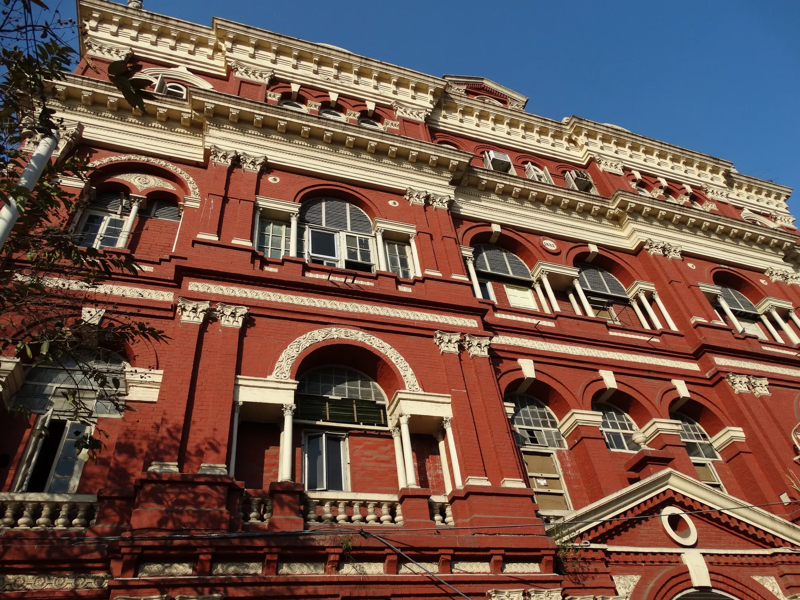
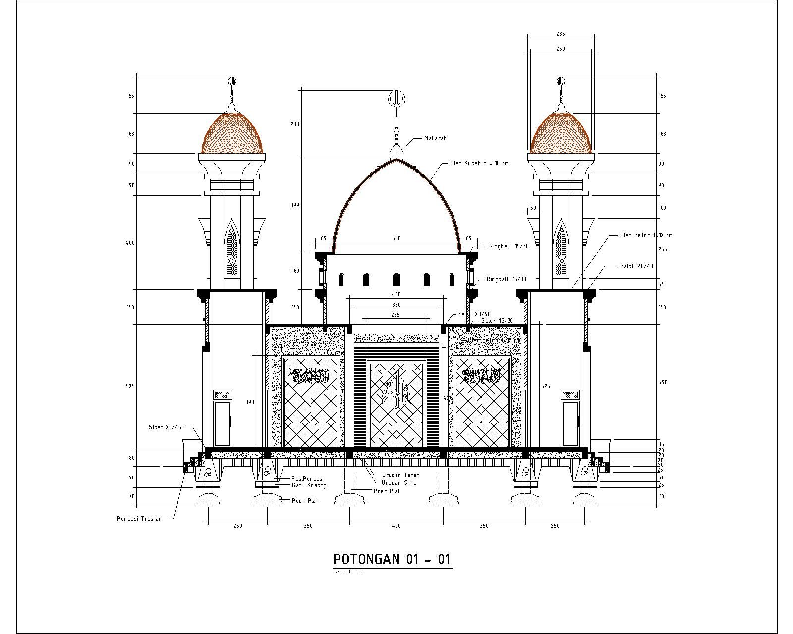
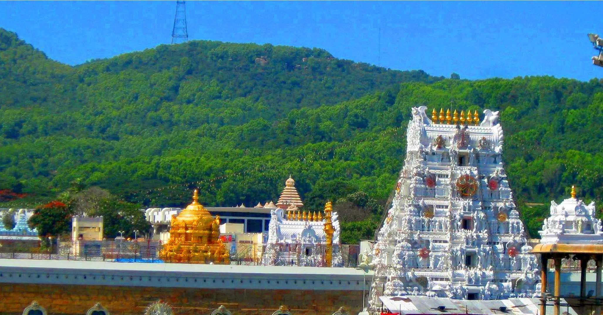

Architecture
Colonial Architecture
>Victorian-era buildings in Kolkata
✨Honest Reviews✨
about Victorian places in Kolkata
A fancy marble building with a mix of British and Indian styles, surrounded by gardens. It's now a museum.😐
A big church with pointy tops and colorful windows.. which the british constructed🙃
Used to be the office for the British East India Company, and later became the government office for West Bengal.😄
Next Up Is . . .
Indo-Islamic Architecture
⬇ This image is pretty complex and interesting.. ⬇
Jokes Aside . . . Here's The Explanation.
Last One . . .
Temples
Short one liners about temples.

Temples in India have a special design with a room, a tall part, a hall, and a front porch.
Temples look different in North and South India because of their style and when they were built.
(Nagara) Temples in the north, like at Khajuraho, have curvy towers and fancy carvings.
(Dravida) Temples in the south, like Brihadeshwara in Thanjavur, have pointy towers and one entrance.